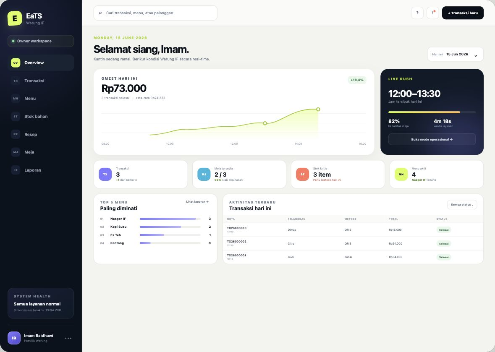

Transaksi lebih cepat
Kasir dapat memilih meja, pelanggan, menu, metode bayar, dan langsung memproses total pesanan.
Portfolio Final Project Kampus
EaTS adalah rancangan aplikasi kasir, pemesanan, inventori, dan laporan penjualan untuk membantu operasional kantin berjalan lebih rapi, cepat, dan terukur.

Project Overview
Kantin kecil sering mencatat pesanan, stok bahan, dan laporan penjualan secara terpisah. EaTS menyatukan alur tersebut ke dalam satu sistem sederhana.
Kasir dapat memilih meja, pelanggan, menu, metode bayar, dan langsung memproses total pesanan.
Setiap detail transaksi terhubung dengan resep sehingga stok bahan dapat divalidasi dan dikurangi otomatis.
Owner melihat omzet harian, menu terlaris, status meja, dan bahan yang perlu restock.
Core Features
Bagian ini merangkum fitur yang digambarkan di prototype UI, cukup untuk menjelaskan alur final project saat presentasi.
UI Prototype
Empat tampilan utama yang mewakili role owner, kasir, pengelola stok, dan pembeli.
Prototype Demo
Tombol kanan atas membuka prototype lengkap hasil ekstrak ZIP, sehingga penguji bisa melihat layar owner, kasir, inventory, dan pembeli sebagai halaman terpisah.
Halaman prototype high-fidelity yang memperlihatkan rancangan fitur EaTS secara lebih lengkap.
Buka demoReport Material
Bagian ini merangkum entitas database, stack teknologi, dan timeline pengerjaan final project.